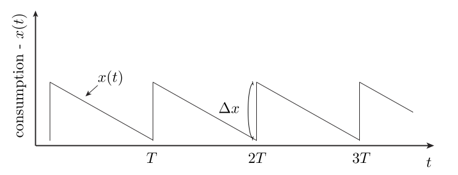

A person’s happiness does not depend only on their current lot in life, but also on its rate of change. This is because the prior history of the person informs what their baseline is for what they can expect. Here, we build a model that highlights this “path-dependence” quality. Interestingly, we find that it can be exploited: One can increase net happiness via a process of gradual increased deprivation, followed by sudden jolts in increased consumption rate, as shown in the cartoon below — this beats the approach of a steady consumption rate.

The utility function model
In this post, we assume that the utility realized by a person over a time \(T\) is given by
Here, \(x(t)\) is a measure of consumption (one’s “lot in life”) at time \(t\). Our model here is a natural Taylor expansion, relevant for small changes in \(x(t)\). It is positive when consumption is going up and negative when consumption is going down. We’ll be interested to learn whether varying \(x(t)\) subject to a fixed average constraint can result in increased net happiness, relative to the steady state consumption solution. The answer is yes, and this can be understood qualitatively by considering the two terms above:
-
First term, \(a \vert x^{\prime}(t) \vert \text{sign}(x^{\prime}(t))\): This term is proportional to the rate of change of consumption. We assume that \(a > 0\), so that as we start to consume less, it is negative, as we go back up it is positive. We will be interested in cycles that repeat here, so will assume that our \(x(t)\) is periodic with period \(T\). In this case, the linear term — while possibly acutely felt at each moment — will integrate to an average of zero over the long term.
-
Second term, \(b \vert x^{\prime}(t) \vert^2 \text{sign}(x^{\prime}(t))\): This term is non-linear. It is very weak for small rates of change but kicks in strongly whenever we have an abrupt change. We again assume that \(b>0\) so that big drops in consumption are very painful, etc.
With the above comments in place, we can now see how our figure gives a net gain in utility: On average, only the quadratic term matters and this will effectively only contribute during sudden jumps. The declines in our figure are gradual, and so contribute only weakly in this term. However, the increases are sudden and each give a significant utility “fix” as a consequence.
For those interested, we walk through the simple mathematics needed to exactly optimize our utility function in an appendix. Concluding comments on the practical application of these ideas are covered next.
Practical considerations
A few comments:
-
Many people treat themselves on occasion — with chocolates, vacations, etc. — perhaps empirically realizing that varying things improves their long term happiness. It is interesting to consider the possibility of optimizing this effect, which we do with our toy model here: In this model, we do not want to live in a steady state salted with occasional treats: Instead, we want the saw-tooth shape of consumption shown in our figure.
-
A sad fact of life is that progress tends to be gradual, while set backs tend to occur suddenly — e.g., stocks tend to move in patterns like this. This is the worst way things could go, according to our model.
-
True, human utility functions are certainly more complex than what we have considered here.
-
It is interesting to contrast models of utility with conservative physical systems, where the energy of a state is not path dependent, but depends only on the current state. Path dependence means that two identical people in the same current situation can have very different valuations of their lot in life.
The appendix below discusses the mathematical optimization of (\ref{1}).
Appendix — optimizing (\ref{1})
For simplicity, we consider a path that goes down from \(t=0\) to \(t_0\) — making its way down by \(\Delta x\), then goes back up to where it started from \(t_0\) to \(T\). It is easy to see that the first term integrates to zero in this case, provided we start and end at the same value of \(x\). Now, consider the second term. On the way down, we have
The inequality here is equivalent to the statement that the variance of the rate of change of our consumption is positive. We get equality — and minimal loss from the quadratic term on the way down — if the slope is constant throughout. That is, we want a linear drop in \(x(t)\) from \(0\) to \(t_0\). With this choice, we get
On the way back up, we’d like to max out the inequality analogous to above. This is achieved by having the recovery occur as quickly as possible, say over a window of time \(t_{r}\) with \(r\) standing for recovery. We can decrease our loss by increasing \(t_0\) up to \(t_0 \to T\). In this case, our integral of the quadratic over all time goes to
This gives the optimal lift possible — that realized by the saw-tooth approach shown in our first figure above.
 Jonathan grew up in the midwest and then went to school at Caltech and UCLA. Following this, he did two postdocs, one at UCSB and one at UC Berkeley. His academic research focused primarily on applications of statistical mechanics, but his professional passion has always been in the mastering, development, and practical application of slick math methods/tools. He worked as a data-scientist at Square for four years and is now working on a quantitative investing startup.
Jonathan grew up in the midwest and then went to school at Caltech and UCLA. Following this, he did two postdocs, one at UCSB and one at UC Berkeley. His academic research focused primarily on applications of statistical mechanics, but his professional passion has always been in the mastering, development, and practical application of slick math methods/tools. He worked as a data-scientist at Square for four years and is now working on a quantitative investing startup.
Comments